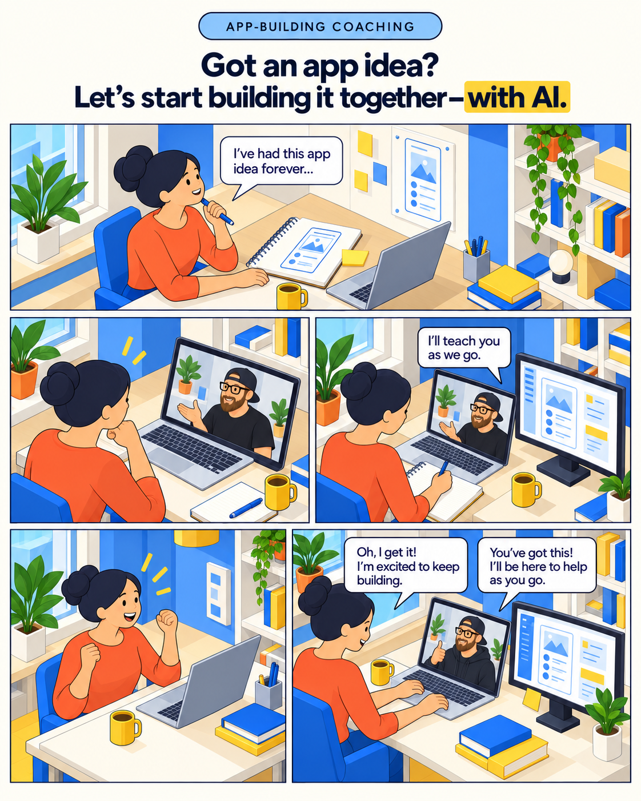

Shape a buildable idea
Turn a broad concept into a clear next step and a small first version.
AI APP-BUILDING COACHING
Bring the idea you keep coming back to. We’ll make a practical start, and I’ll teach you the tools and methods to keep developing it yourself.
You don’t need a perfect plan, a technical background, or the perfect prompt.

A REAL PROJECT, NOT A LECTURE
We’ll focus on the most useful starting point for your app. That could mean clarifying the idea, mapping the first version, setting up an AI-assisted coding workflow, or working through an early feature together.
You’ll see how I break down a project, give AI the right context, guide its work, check the result, and recover when it goes sideways. Then you can use that process on the next step.
WHAT YOU’LL PRACTICE
We’ll tailor the work to your idea and starting point. These are examples, not a fixed curriculum.
Turn a broad concept into a clear next step and a small first version.
Learn how to brief AI, keep it focused, and work through code changes together.
Check what AI produces, spot issues, and get unstuck without starting over.
BRING THE IDEA YOU CAN’T STOP THINKING ABOUT
Request a first-session time to start building your app and learn how to keep going with AI.